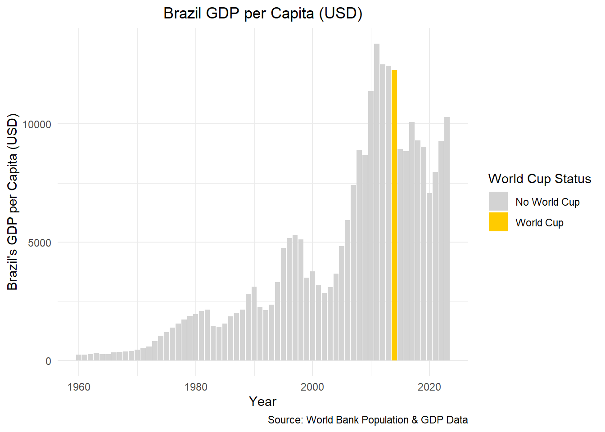

── Attaching core tidyverse packages ──────────────────────── tidyverse 2.0.0 ──
✔ dplyr 1.1.4 ✔ readr 2.1.5
✔ forcats 1.0.0 ✔ stringr 1.5.1
✔ ggplot2 3.5.1 ✔ tibble 3.2.1
✔ lubridate 1.9.4 ✔ tidyr 1.3.1
✔ purrr 1.0.2
── Conflicts ────────────────────────────────────────── tidyverse_conflicts() ──
✖ dplyr::filter() masks stats::filter()
✖ dplyr::lag() masks stats::lag()
ℹ Use the conflicted package (<http://conflicted.r-lib.org/>) to force all conflicts to become errors
library(summarytools)
Warning: package 'summarytools' was built under R version 4.4.3
Attaching package: 'summarytools'
The following object is masked from 'package:tibble':
view
library(janitor)
Attaching package: 'janitor'
The following objects are masked from 'package:stats':
chisq.test, fisher.test
library(sf)
Linking to GEOS 3.13.0, GDAL 3.10.1, PROJ 9.5.1; sf_use_s2() is TRUE
library(rnaturalearth)library(rnaturalearthdata)
Warning: package 'rnaturalearthdata' was built under R version 4.4.3
Attaching package: 'rnaturalearthdata'
The following object is masked from 'package:rnaturalearth':
countries110
library(dplyr)library(tibble)library(leaflet)
world_cup <-read_csv("../../data/wcmatches.csv")
Rows: 900 Columns: 15
── Column specification ────────────────────────────────────────────────────────
Delimiter: ","
chr (11): country, city, stage, home_team, away_team, outcome, win_conditio...
dbl (3): year, home_score, away_score
date (1): date
ℹ Use `spec()` to retrieve the full column specification for this data.
ℹ Specify the column types or set `show_col_types = FALSE` to quiet this message.
world_cup |>clean_names() |># standardizes column names to snake_caseremove_empty("rows") |># removes empty rowsremove_empty("cols") |># removes empty columnsremove_constant() # removes columns with only 1 unique value
# A tibble: 900 × 15
year country city stage home_team away_team home_score away_score outcome
<dbl> <chr> <chr> <chr> <chr> <chr> <dbl> <dbl> <chr>
1 1930 Uruguay Montev… Grou… France Mexico 4 1 H
2 1930 Uruguay Montev… Grou… Belgium United S… 0 3 A
3 1930 Uruguay Montev… Grou… Brazil Yugoslav… 1 2 A
4 1930 Uruguay Montev… Grou… Peru Romania 1 3 A
5 1930 Uruguay Montev… Grou… Argentina France 1 0 H
6 1930 Uruguay Montev… Grou… Chile Mexico 3 0 H
7 1930 Uruguay Montev… Grou… Bolivia Yugoslav… 0 4 A
8 1930 Uruguay Montev… Grou… Paraguay United S… 0 3 A
9 1930 Uruguay Montev… Grou… Uruguay Peru 1 0 H
10 1930 Uruguay Montev… Grou… Argentina Mexico 6 3 H
# ℹ 890 more rows
# ℹ 6 more variables: win_conditions <chr>, winning_team <chr>,
# losing_team <chr>, date <date>, month <chr>, dayofweek <chr>
world_cup|>get_dupes()
No variable names specified - using all columns.
No duplicate combinations found of: year, country, city, stage, home_team, away_team, home_score, away_score, outcome, ... and 6 other variables
# A tibble: 0 × 16
# ℹ 16 variables: year <dbl>, country <chr>, city <chr>, stage <chr>,
# home_team <chr>, away_team <chr>, home_score <dbl>, away_score <dbl>,
# outcome <chr>, win_conditions <chr>, winning_team <chr>, losing_team <chr>,
# date <date>, month <chr>, dayofweek <chr>, dupe_count <int>
dfSummary(world_cup)
Data Frame Summary
world_cup
Dimensions: 900 x 15
Duplicates: 0
--------------------------------------------------------------------------------------------------------------------
No Variable Stats / Values Freqs (% of Valid) Graph Valid Missing
---- ---------------- ------------------------------- --------------------- ------------------- ---------- ---------
1 year Mean (sd) : 1986.9 (23.2) 21 distinct values : 900 0
[numeric] min < med < max: : : . (100.0%) (0.0%)
1930 < 1990 < 2018 . : : : :
IQR (CV) : 36 (0) . . : : : : : :
: . : : : : : : :
2 country 1. Germany 102 (11.3%) II 900 0
[character] 2. Brazil 86 ( 9.6%) I (100.0%) (0.0%)
3. Mexico 84 ( 9.3%) I
4. France 82 ( 9.1%) I
5. Italy 69 ( 7.7%) I
6. Russia 64 ( 7.1%) I
7. South Africa 64 ( 7.1%) I
8. Spain 52 ( 5.8%) I
9. United States 52 ( 5.8%) I
10. Argentina 38 ( 4.2%)
[ 7 others ] 207 (23.0%) IIII
3 city 1. Mexico City 23 ( 2.6%) 900 0
[character] 2. Montevideo 18 ( 2.0%) (100.0%) (0.0%)
3. Guadalajara 17 ( 1.9%)
4. Johannesburg 15 ( 1.7%)
5. Rio de Janeiro 15 ( 1.7%)
6. Buenos Aires 12 ( 1.3%)
7. Moscow 12 ( 1.3%)
8. São Paulo 12 ( 1.3%)
9. León 11 ( 1.2%)
10. Munich 11 ( 1.2%)
[ 151 others ] 754 (83.8%) IIIIIIIIIIIIIIII
4 stage 1. Round of 16 89 ( 9.9%) I 900 0
[character] 2. Group A 69 ( 7.7%) I (100.0%) (0.0%)
3. Group B 69 ( 7.7%) I
4. Quarterfinals 66 ( 7.3%) I
5. Group 1 59 ( 6.6%) I
6. Group C 57 ( 6.3%) I
7. Group D 57 ( 6.3%) I
8. Group 2 56 ( 6.2%) I
9. Group E 54 ( 6.0%) I
10. Group F 54 ( 6.0%) I
[ 10 others ] 270 (30.0%) IIIIII
5 home_team 1. Brazil 84 ( 9.3%) I 900 0
[character] 2. Argentina 60 ( 6.7%) I (100.0%) (0.0%)
3. Italy 49 ( 5.4%) I
4. West Germany 43 ( 4.8%)
5. France 40 ( 4.4%)
6. England 36 ( 4.0%)
7. Germany 34 ( 3.8%)
8. Spain 30 ( 3.3%)
9. Netherlands 27 ( 3.0%)
10. Belgium 26 ( 2.9%)
[ 71 others ] 471 (52.3%) IIIIIIIIII
6 away_team 1. Uruguay 37 ( 4.1%) 900 0
[character] 2. Italy 34 ( 3.8%) (100.0%) (0.0%)
3. England 33 ( 3.7%)
4. Spain 33 ( 3.7%)
5. Mexico 31 ( 3.4%)
6. Yugoslavia 28 ( 3.1%)
7. France 26 ( 2.9%)
8. Sweden 26 ( 2.9%)
9. Brazil 25 ( 2.8%)
10. Switzerland 25 ( 2.8%)
[ 72 others ] 602 (66.9%) IIIIIIIIIIIII
7 home_score Mean (sd) : 1.6 (1.5) 11 distinct values : 900 0
[numeric] min < med < max: : (100.0%) (0.0%)
0 < 1 < 10 :
IQR (CV) : 2 (0.9) : :
: : : .
8 away_score Mean (sd) : 1.3 (1.3) 0 : 285 (31.7%) IIIIII 900 0
[numeric] min < med < max: 1 : 322 (35.8%) IIIIIII (100.0%) (0.0%)
0 < 1 < 8 2 : 160 (17.8%) III
IQR (CV) : 2 (1) 3 : 83 ( 9.2%) I
4 : 27 ( 3.0%)
5 : 12 ( 1.3%)
6 : 3 ( 0.3%)
7 : 5 ( 0.6%)
8 : 3 ( 0.3%)
9 outcome 1. A 302 (33.6%) IIIIII 900 0
[character] 2. D 169 (18.8%) III (100.0%) (0.0%)
3. H 429 (47.7%) IIIIIIIII
10 win_conditions 1. Italy won in AET 5 ( 8.1%) I 62 838
[character] 2. Argentina won in AET 3 ( 4.8%) (6.9%) (93.1%)
3. England won in AET 3 ( 4.8%)
4. Argentina won in penaltie 2 ( 3.2%)
5. Belgium won in AET 2 ( 3.2%)
6. Brazil won in penalties ( 2 ( 3.2%)
7. France won in AET 2 ( 3.2%)
8. France won in penalties ( 2 ( 3.2%)
9. Germany won in AET 2 ( 3.2%)
10. Argentina won in penaltie 1 ( 1.6%)
[ 38 others ] 38 (61.3%) IIIIIIIIIIII
11 winning_team 1. Brazil 76 (10.4%) II 731 169
[character] 2. Argentina 47 ( 6.4%) I (81.2%) (18.8%)
3. Italy 46 ( 6.3%) I
4. West Germany 39 ( 5.3%) I
5. France 36 ( 4.9%)
6. Germany 32 ( 4.4%)
7. Spain 31 ( 4.2%)
8. England 30 ( 4.1%)
9. Netherlands 28 ( 3.8%)
10. Uruguay 25 ( 3.4%)
[ 55 others ] 341 (46.6%) IIIIIIIII
12 losing_team 1. Mexico 29 ( 4.0%) 731 169
[character] 2. Argentina 24 ( 3.3%) (81.2%) (18.8%)
3. England 22 ( 3.0%)
4. France 21 ( 2.9%)
5. Spain 21 ( 2.9%)
6. Italy 20 ( 2.7%)
7. Uruguay 20 ( 2.7%)
8. Belgium 19 ( 2.6%)
9. Brazil 19 ( 2.6%)
10. South Korea 19 ( 2.6%)
[ 74 others ] 517 (70.7%) IIIIIIIIIIIIII
13 date min : 1930-07-13 355 distinct values : 900 0
[Date] med : 1990-06-23 . . : (100.0%) (0.0%)
max : 2018-07-15 : : :
range : 88y 0m 2d . : : : :
. . : : : : : :
14 month 1. Jul 150 (16.7%) III 900 0
[character] 2. Jun 727 (80.8%) IIIIIIIIIIIIIIII (100.0%) (0.0%)
3. May 23 ( 2.6%)
15 dayofweek 1. Friday 92 (10.2%) II 900 0
[character] 2. Monday 82 ( 9.1%) I (100.0%) (0.0%)
3. Saturday 152 (16.9%) III
4. Sunday 196 (21.8%) IIII
5. Thursday 111 (12.3%) II
6. Tuesday 119 (13.2%) II
7. Wednesday 148 (16.4%) III
--------------------------------------------------------------------------------------------------------------------
gdp_data <-read_csv("../../World Bank Econ Data/API_NY.GDP.MKTP.CD_DS2_en_csv_v2_26433.csv", skip =4)
New names:
Rows: 266 Columns: 69
── Column specification
──────────────────────────────────────────────────────── Delimiter: "," chr
(4): Country Name, Country Code, Indicator Name, Indicator Code dbl (64): 1960,
1961, 1962, 1963, 1964, 1965, 1966, 1967, 1968, 1969, 1970, ... lgl (1): ...69
ℹ Use `spec()` to retrieve the full column specification for this data. ℹ
Specify the column types or set `show_col_types = FALSE` to quiet this message.
• `` -> `...69`
pop_data <-read_csv("../../World Bank Population Data/API_SP.POP.TOTL_DS2_en_csv_v2_19373.csv", skip =4)
New names:
Rows: 266 Columns: 70
── Column specification
──────────────────────────────────────────────────────── Delimiter: "," chr
(4): Country Name, Country Code, Indicator Name, Indicator Code dbl (64): 1960,
1961, 1962, 1963, 1964, 1965, 1966, 1967, 1968, 1969, 1970, ... lgl (2): 2024,
...70
ℹ Use `spec()` to retrieve the full column specification for this data. ℹ
Specify the column types or set `show_col_types = FALSE` to quiet this message.
• `` -> `...70`
tour_data <-read_csv("../../World Bank International Tourist Data/API_ST.INT.ARVL_DS2_en_csv_v2_19636.csv", skip =4)
New names:
Rows: 266 Columns: 70
── Column specification
──────────────────────────────────────────────────────── Delimiter: "," chr
(4): Country Name, Country Code, Indicator Name, Indicator Code dbl (26): 1995,
1996, 1997, 1998, 1999, 2000, 2001, 2002, 2003, 2004, 2005, ... lgl (40): 1960,
1961, 1962, 1963, 1964, 1965, 1966, 1967, 1968, 1969, 1970, ...
ℹ Use `spec()` to retrieve the full column specification for this data. ℹ
Specify the column types or set `show_col_types = FALSE` to quiet this message.
• `` -> `...70`
Warning: There was 1 warning in `mutate()`.
ℹ In argument: `Year = as.numeric(Year)`.
Caused by warning:
! NAs introduced by coercion
BRA_gdppop <- BRA_gdppop |>mutate(Host_Status ="No World Cup")BRA_gdppop$Host_Status[BRA_gdppop$Year ==2014] <-"World Cup"ggplot(BRA_gdppop, aes(x = Year, y = GDP_per_Capita, fill = Host_Status)) +geom_col() +scale_fill_manual(values =c("World Cup"="#FFCB00", "No World Cup"="lightgrey")) +labs(title ="Brazil GDP per Capita (USD)",x ="Year",y ="Brazil's GDP per Capita (USD)", caption ="Source: World Bank Population & GDP Data", fill ="World Cup Status") +theme_minimal() +theme(plot.title =element_text(hjust =0.5))
Warning: Removed 1 row containing missing values or values outside the scale range
(`geom_col()`).

BRA_subset <- BRA_tour_long |>filter(Year >=2010& Year <=2018)highlight_years <- BRA_subset |>filter(Year %in%c(2014, 2016))ggplot(BRA_subset, aes(x = Year, y = Tourists_Millions)) +geom_point(color ="black") +geom_point(data =subset(BRA_subset, Year ==2014),aes(color ="World Cup"),size =3) +geom_point(data =subset(BRA_subset, Year ==2016),aes(color ="Olympics"),size =3) +geom_line(color ="black") +scale_color_manual(name ="Event",values =c("World Cup"="green", "Olympics"="red")) +labs(title ="Brazil International Tourist Arrivals Over Time",x ="Year",y ="International Arrivals (Millions)",caption ="Source: World Bank International Tourists Data") +theme_minimal() +theme(plot.title =element_text(hjust =0.5), legend.title =element_text(size =12), legend.text =element_text(size =10))